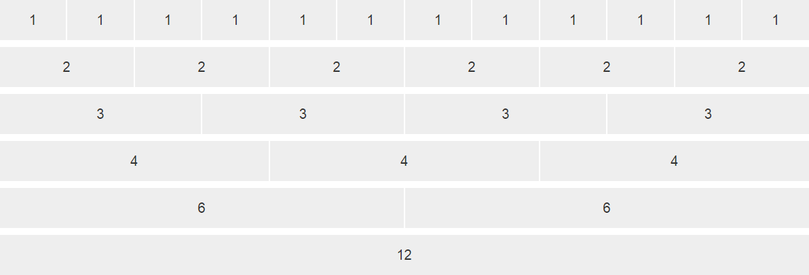
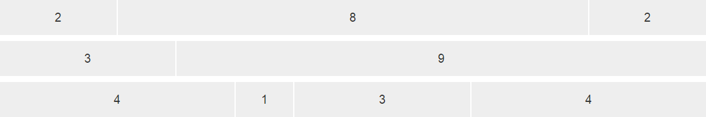
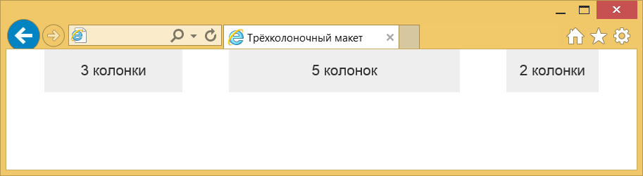
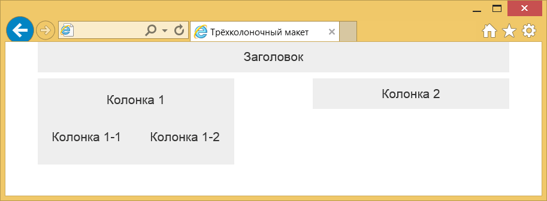

Модульные сетки
Bootstrap характерен своей продуманной и гибкой системой модульных сеток, в основе которой лежит 12-колоночный макет.
Сами колонки не обязательно должны иметь одинаковую ширину, можно комбинировать любое число колонок, главное, чтобы они в сумме давали 12.
Создание колонок
Так, чтобы создать макет из трёх колонок используем
Сами колонки находятся внутри
<!doctype html>
<html>
<head>
<meta charset="utf-8">
<title>Трёхколоночный макет</title>
<link href="css/bootstrap.min.css" rel="stylesheet">
<style>
[class*="col-"] {
background-color: #eee;
border-right: 2px solid #fff;
text-align: center;
padding-top: 15px;
padding-bottom: 15px;
font-size: 2rem;
}
</style>
</head>
<body>
<div class="container">
<div class="row">
<div class="col-xs-3">3 колонки</div>
<div class="col-xs-7">7 колонок</div>
<div class="col-xs-2">2 колонки</div>
</div>
</div>
<script src="js/jquery.min.js"></script>
<script src="js/bootstrap.min.js"></script>
</body>
</html>
Стиль добавлен лишь для наглядного выделения колонок.
Класс container создаёт макет фиксированной ширины, значение которой зависит от размера устройства.
Для мониторов максимальная ширина составляет 1170 пикселей, для смартфонов макет будет занимать всю доступную ширину.
Если вам не требуется ограничивать ширину макета, то вместо класса container следует использовать container-fluid (пример ниже).
4 колонки6 колонок2 колонки
Отступы между колонок
Колонки изначально плотно прилегают друг к другу, что не всегда полезно для макета.
Для добавления пустого пространства между колонками предназначен класс col-xs-offset-N, где N изменяется от 0 до 12.
Отступ добавляется слева от текущей колонки.
3 колонки5 колонок2 колонки
Результат данного примера в браузере показан ниже.
Помните, что отступы добавляются к общему числу колонок, сумма которых не должна превышать 12, в противном случае колонки начнут перемещаться на другую строку.
Сдвиг колонок
Каждую колонку можно сдвигать влево или вправо на указанное число колонок.
Опять же это делается с помощью классов. col-xs-pull-N — сдвигает колонку влево на заданное число, а col-xs-push-N сдвигает вправо (пример ниже).
Здесь N может меняться от 0 до 12.
3 колонки5 колонок2 колонки
Заметьте, что сдвиг это не дополнительная колонка как при использовании offset, так что суммировать все значения не нужно.
Ещё надо следить за тем, чтобы колонки не накладывались друг на друга.
Вложенные колонки
При вёрстке сложных макетов двенадцати колонок может не хватить, к тому же в одной колонке могут встречаться ещё дополнительные.
Так что нам потребуются вложения одних колонок в другие.
Делается это похожим образом.
ЗаголовокКолонка 1Колонка 1-1Колонка 1-2Колонка 2
Чтобы создать вложенные колонки опять добавляем
Таким образом можно сверстать какие угодно сложные макеты.
Заметьте, что заголовок заполняет всю ширину макета, потому что он занимает все 12 колонок.
Дополнительный контейнер row для подобных вещей вводить не обязательно, перенос остальных колонок на другую строку произойдет автоматически (рис.).
